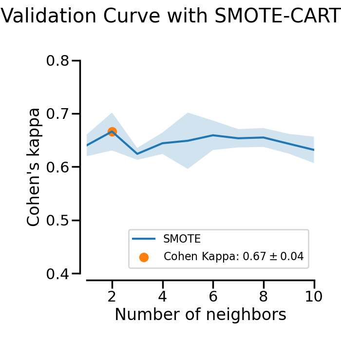

Note
Click here to download the full example code
Plotting Validation Curves¶
In this example the impact of the SMOTE’s k_neighbors parameter is examined. In the plot you can see the validation scores of a SMOTE-CART classifier for different values of the SMOTE’s k_neighbors parameter.
# Authors: Christos Aridas
# Guillaume Lemaitre <g.lemaitre58@gmail.com>
# License: MIT
import matplotlib.pyplot as plt
import numpy as np
from sklearn import model_selection as ms
from sklearn import datasets, metrics, tree
from imblearn import over_sampling as os
from imblearn import pipeline as pl
print(__doc__)
RANDOM_STATE = 42
scorer = metrics.make_scorer(metrics.cohen_kappa_score)
# Generate the dataset
X, y = datasets.make_classification(n_classes=2, class_sep=2,
weights=[0.1, 0.9], n_informative=10,
n_redundant=1, flip_y=0, n_features=20,
n_clusters_per_class=4, n_samples=5000,
random_state=RANDOM_STATE)
smote = os.SMOTE(random_state=RANDOM_STATE)
cart = tree.DecisionTreeClassifier(random_state=RANDOM_STATE)
pipeline = pl.make_pipeline(smote, cart)
param_range = range(1, 11)
train_scores, test_scores = ms.validation_curve(
pipeline, X, y, param_name="smote__k_neighbors", param_range=param_range,
cv=3, scoring=scorer)
train_scores_mean = np.mean(train_scores, axis=1)
train_scores_std = np.std(train_scores, axis=1)
test_scores_mean = np.mean(test_scores, axis=1)
test_scores_std = np.std(test_scores, axis=1)
fig = plt.figure()
ax = fig.add_subplot(1, 1, 1)
plt.plot(param_range, test_scores_mean, label='SMOTE')
ax.fill_between(param_range, test_scores_mean + test_scores_std,
test_scores_mean - test_scores_std, alpha=0.2)
idx_max = np.argmax(test_scores_mean)
plt.scatter(param_range[idx_max], test_scores_mean[idx_max],
label=r'Cohen Kappa: ${:.2f}\pm{:.2f}$'.format(
test_scores_mean[idx_max], test_scores_std[idx_max]))
plt.title("Validation Curve with SMOTE-CART")
plt.xlabel("k_neighbors")
plt.ylabel("Cohen's kappa")
# make nice plotting
ax.spines['top'].set_visible(False)
ax.spines['right'].set_visible(False)
ax.get_xaxis().tick_bottom()
ax.get_yaxis().tick_left()
ax.spines['left'].set_position(('outward', 10))
ax.spines['bottom'].set_position(('outward', 10))
plt.xlim([1, 10])
plt.ylim([0.4, 0.8])
plt.legend(loc="best")
plt.show()
Total running time of the script: ( 0 minutes 6.717 seconds)
Estimated memory usage: 8 MB